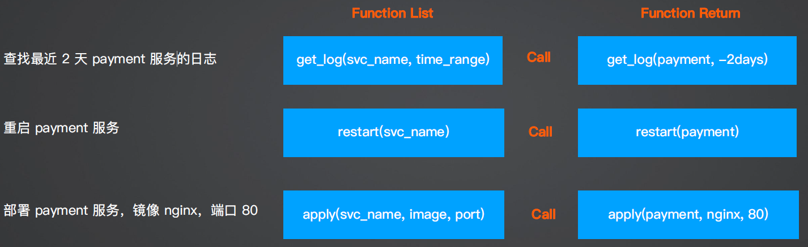

Function Calling
概述
functions 是 Chat Completion API 中的可选参数，用于提供函数定义。其目的是使 GPT 模型能够生成符合所提供定义的函数参数。请注意，API不会实际执行任何函数调用。开发人员需要使用GPT 模型输出来执行函数调用。
如果提供了functions参数，默认情况下，GPT 模型将决定在何时适当地使用其中一个函数。
可以通过将function_call参数设置为{"name": "<insert-function-name>"}来强制 API 使用指定函数。
同时，也支持通过将function_call参数设置为"none"来强制API不使用任何函数。
如果使用了某个函数，则响应中的输出将包含"finish_reason": "function_call"，以及一个具有该函数名称和生成的函数参数的function_call对象。
核心代码

tools = [
{
"type": "function",
"function": {
"name": "analyze_loki_log",
"description": "从 Loki 获取日志",
"parameters": {
"type": "object",
"properties": {
"query_str": {
"type": "string",
"description": 'Loki 查询字符串，例如：{app="grafana"} |= "Error"',
},
},
},
"required": ["query_str"],
},
}
]
response = client.chat.completions.create(
model="gpt-4o",
messages=messages,
tools=tools,
tool_choice="auto",
)
作用：
- ChatGPT 选择合适函数来完成任务
- 从语义解析函数所需的参数
- 实现大模型和程序的连接
入参： Tools 列表（函数）、功能描述、函数入参
Tools 列表（函数）、功能描述、函数入参
使用场景： 任何需要通过和外部系统交互的功能 ChatOps
- 任何需要通过和外部系统交互的功能
- ChatOps
扩展时只需要扩展 function List
示例 1
pip install openai
from openai import OpenAI
from dotenv import load_dotenv
# 加载环境变量
load_dotenv()
chatgpt_api_key = os.getenv('CHATGPT_API_KEY')
client = OpenAI(
api_key = chatgpt_api_key,
)
query = "查看 app=grafana 且关键字包含 Error 的日志"
messages = [
{
"role": "system",
"content": "你是一个 Loki 日志分析助手，你可以帮助用户分析 Loki 日志，你可以调用多个函数来帮助用户完成任务，并最终尝试分析错误产生的原因",
},
{
"role": "user",
"content": query,
},
]
tools = [
{
"type": "function",
"function": {
"name": "analyze_loki_log",
"description": "从 Loki 获取日志",
"parameters": {
"type": "object",
"properties": {
"query_str": {
"type": "string",
"description": 'Loki 查询字符串，例如：{app="grafana"} |= "Error"',
},
},
"required": ["query_str"],
},
},
}
# 如果有多个 tools，可以继续定义
]
response = client.chat.completions.create(
model="gpt-4o",
messages=messages,
tools=tools,
tool_choice="auto",
)
response_message = response.choices[0].message
tool_calls = response_message.tool_calls
print("\nChatGPT want to call function: ", tool_calls)
示例 2
查询天气
from dotenv import load_dotenv
from openai import OpenAI
import os
from tenacity import retry, wait_random_exponential, stop_after_attempt
# 加载环境变量
load_dotenv()
chatgpt_api_key = os.getenv('CHATGPT_API_KEY')
client = OpenAI(
api_key=chatgpt_api_key
)
# 定义一个空列表messages，用于存储聊天的内容
messages = []
# 使用append方法向messages列表添加一条系统角色的消息
messages.append({
"role": "system", # 消息的角色是"system"
"content": "Don't make assumptions about what values to plug into functions. Ask for clarification if a user request is ambiguous." # 消息的内容
})
# 向messages列表添加一条用户角色的消息,演示无法调用，生成提示信息
# messages.append({
# "role": "user", # 消息的角色是"user"
# "content": "What's the weather like today" # 用户询问今天的天气情况
# })
# 正常调用工具
# messages.append({
# "role": "user", # 消息的角色是"user"
# "content": "what is the weather going to be like in Shanghai today"
# })
# 测试第二个工具的调用
messages.append({
"role": "user", # 消息的角色是"user"
"content": "what is the weather going to be like in Shanghai, China over the next 5 days"
})
# 定义一个名为functions的列表，其中包含两个字典，这两个字典分别定义了两个功能的相关参数
# 第一个字典定义了一个名为"get_current_weather"的功能
tools = [
{
"type" : "function",
"function" : {
"name": "get_current_weather", # 功能的名称
"description": "Get the current weather", # 功能的描述
"parameters": { # 定义该功能需要的参数
"type": "object",
"properties": { # 参数的属性
"location": { # 地点参数
"type": "string", # 参数类型为字符串
"description": "The city and state, e.g. San Francisco, CA", # 参数的描述
},
"format": { # 温度单位参数
"type": "string", # 参数类型为字符串
"enum": ["celsius", "fahrenheit"], # 参数的取值范围
"description": "The temperature unit to use. Infer this from the users location.", # 参数的描述
},
},
"required": ["location", "format"], # 该功能需要的必要参数
},
}
},
# 第二个字典定义了一个名为"get_n_day_weather_forecast"的功能
{
"type" : "function",
"function" : {
"name": "get_n_day_weather_forecast", # 功能的名称
"description": "Get an N-day weather forecast", # 功能的描述
"parameters": { # 定义该功能需要的参数
"type": "object",
"properties": { # 参数的属性
"location": { # 地点参数
"type": "string", # 参数类型为字符串
"description": "The city and state, e.g. San Francisco, CA", # 参数的描述
},
"format": { # 温度单位参数
"type": "string", # 参数类型为字符串
"enum": ["celsius", "fahrenheit"], # 参数的取值范围
"description": "The temperature unit to use. Infer this from the users location.", # 参数的描述
},
"num_days": { # 预测天数参数
"type": "integer", # 参数类型为整数
"description": "The number of days to forecast", # 参数的描述
}
},
"required": ["location", "format", "num_days"] # 该功能需要的必要参数
},
}
},
]
response = client.chat.completions.create(
model="gpt-4o",
messages=messages,
tools=tools,
tool_choice="auto",
)
response_message = response.choices[0].message
if response_message.content == None:
tool_calls = response_message.tool_calls
print("\nChatGPT want to call function: ", tool_calls)
for tool_call in tool_calls:
print(f"return function name:{tool_call.function.name},return function arguments:{tool_call.function.arguments}")
else:
print(f"response_message:{response_message.content}")
示例 3 如何实际执行一个function
test_sqlite.py
import sqlite3
conn = sqlite3.connect("/Users/keti/Documents/aiops/aiops_Learning/functioncalling/data/chinook.db")
# print("Opened database successfully")
def get_table_names(conn):
"""返回一个包含所有表名的列表"""
table_names = [] # 创建一个空的表名列表
# 执行SQL查询，获取数据库中所有表的名字
tables = conn.execute("SELECT name FROM sqlite_master WHERE type='table';")
# 遍历查询结果，并将每个表名添加到列表中
for table in tables.fetchall():
table_names.append(table[0])
return table_names # 返回表名列表
def get_column_names(conn, table_name):
"""返回一个给定表的所有列名的列表"""
column_names = [] # 创建一个空的列名列表
# 执行SQL查询，获取表的所有列的信息
columns = conn.execute(f"PRAGMA table_info('{table_name}');").fetchall()
# 遍历查询结果，并将每个列名添加到列表中
for col in columns:
column_names.append(col[1])
return column_names # 返回列名列表
def get_database_info(conn):
"""返回一个字典列表，每个字典包含一个表的名字和列信息"""
table_dicts = [] # 创建一个空的字典列表
# 遍历数据库中的所有表
for table_name in get_table_names(conn):
columns_names = get_column_names(conn, table_name) # 获取当前表的所有列名
# 将表名和列名信息作为一个字典添加到列表中
table_dicts.append({"table_name": table_name, "column_names": columns_names})
return table_dicts # 返回字典列表
# 获取数据库信息，并存储为字典列表
database_schema_dict = get_database_info(conn)
# 将数据库信息转换为字符串格式，方便后续使用
database_schema_string = "\n".join(
[
f"Table: {table['table_name']}\nColumns: {', '.join(table['column_names'])}"
for table in database_schema_dict
]
)
# print(database_schema_string)
sql.py
from dotenv import load_dotenv
from openai import OpenAI
import os
from tenacity import retry, wait_random_exponential, stop_after_attempt
import sqlite3
import test_sqlite
import json
# 加载环境变量
load_dotenv()
chatgpt_api_key = os.getenv('CHATGPT_API_KEY')
client = OpenAI(
api_key=chatgpt_api_key
)
# 定义一个空列表messages，用于存储聊天的内容
messages = []
# 使用append方法向messages列表添加一条系统角色的消息
messages.append(
{
"role": "system",
"content": "Answer user questions by generating SQL queries against the Chinook Music Database."
}
)
messages.append(
{
"role": "user",
"content": "Hi, who are the top 5 artists by number of tracks?"
}
)
# 获取数据库信息，并存储为字典列表
conn = sqlite3.connect("/Users/keti/Documents/aiops/aiops_Learning/functioncalling/data/chinook.db")
database_schema_dict = test_sqlite.get_database_info(conn)
# 将数据库信息转换为字符串格式，方便后续使用
database_schema_string = "\n".join(
[
f"Table: {table['table_name']}\nColumns: {', '.join(table['column_names'])}"
for table in database_schema_dict
]
)
tools = [
{
"type" : "function",
"function" : {
"name": "ask_database",
"description": "Use this function to answer user questions about music. Output should be a fully formed SQL query.",
"parameters": {
"type": "object",
"properties": {
"query": {
"type": "string",
"description": f"""
SQL query extracting info to answer the user's question.
SQL should be written using this database schema:
{database_schema_string}
The query should be returned in plain text, not in JSON.
""",
}
}
}
}
}
]
def ask_database(conn, query):
"""使用 query 来查询 SQLite 数据库的函数。"""
try:
results = str(conn.execute(query).fetchall()) # 执行查询，并将结果转换为字符串
except Exception as e: # 如果查询失败，捕获异常并返回错误信息
results = f"query failed with error: {e}"
return results # 返回查询结果
def execute_function_call(message):
"""执行函数调用"""
# 判断功能调用的名称是否为 "ask_database"
if tool_call.function.name == "ask_database":
# 如果是，则获取功能调用的参数，这里是 SQL 查询
query = json.loads(message.function.arguments)["query"]
# 使用 ask_database 函数执行查询，并获取结果
results = ask_database(conn, query)
else:
# 如果功能调用的名称不是 "ask_database"，则返回错误信息
results = f"Error: function {message.function.arguments} does not exist"
return results # 返回结果
response = client.chat.completions.create(
model="gpt-4o",
messages=messages,
tools=tools,
tool_choice="auto",
)
response_message = response.choices[0].message
if response_message.content == None:
tool_calls = response_message.tool_calls
# print("\nChatGPT want to call function: ", tool_calls)
for tool_call in tool_calls:
# print(f"\nreturn function name:{tool_call.function.name},\nreturn function arguments:{tool_call.function.arguments}")
results = execute_function_call(tool_call)
messages.append({"role": "function", "name": tool_call.function.name, "content": results})
print(messages)
else:
print(f"response_message:{response_message.content}")
# 使用 pretty_print_conversation 函数打印对话